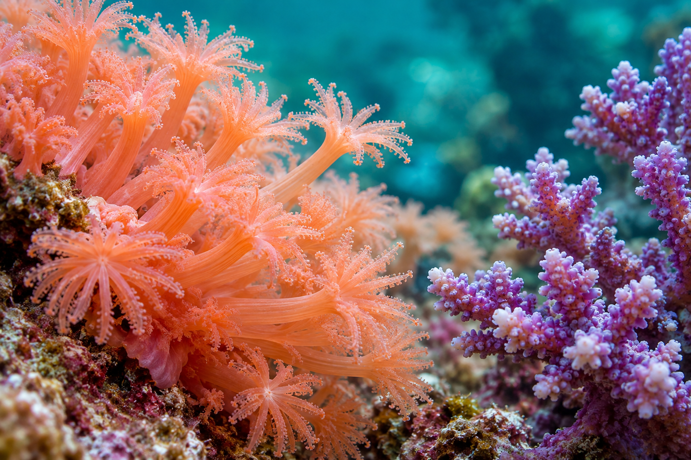

MR. FISH TANK / OCEAN EDITION
把一片海，
帶進生活。
光穿過水，珊瑚在藍色裡舒展。
把海洋的層次與色彩，
化成日常可以凝望的風景。
INSPIRED BY THE SEA. DESIGNED FOR YOUR SPACE.
01A CLOSER LOOK AT THE OCEAN
海的細節，值得慢慢看。
CORAL / LIGHT / TEXTURE 
A SMALL DETAIL. AN ENTIRE WORLD.一束光，一道紋理。
海洋，自有它的節奏。
枝狀輪廓、柔軟的起伏、礁岩之間的留白。海洋的魅力，不只在湛藍，也藏在每一處細微的層次。
魚缸先生希望以空間需求為起點，將珊瑚、礁岩與海水缸的視覺語彙帶進生活。實際設備、配置與養護，仍需依現場條件討論。
了解規劃流程 →02OCEAN DESIGN SERVICES
從一個想法，開始規劃你的海。
DESIGN WITH THE OCEAN CORAL REEF珊瑚礁景
以珊瑚的輪廓、礁岩的層次與水中留白，探索一方海洋的視覺構成。
OCEAN IN SPACE海洋空間
從住宅、辦公室到店面，討論海水缸的比例、觀看角度與空間關係。
WHITE SAND LAGOON白沙潟湖
以白沙、低矮礁岩與開闊水域，呈現明亮、舒展的海洋風景。
LIGHTING & CARE照明與養護
依海水缸的規劃方向，討論照明呈現、日常管理與設備維護需求。
03THE LANGUAGE OF CORAL
不同的珊瑚，不同的海洋表情。
SELECT A CORAL FORM 01 / BRANCHING FORMS向光延伸，讓海洋有了輪廓。
細緻分枝交錯成景，在光影之間形成清楚的高低與方向。適合用來想像一座帶有立體層次的海底森林。
- 視覺線條
- 分枝、交錯、向上延伸
- 構景感受
- 立體、輕盈、富有節奏
- 色彩方向
- 青綠、暖珊瑚色與海洋藍
02 / BLOOMING FORMS一簇簇色彩，盛開在水中。
以圓潤的簇狀輪廓與細膩紋理，展現像花園般的海洋想像。色彩的聚合與留白，讓視線慢慢停留。
- 視覺線條
- 圓潤、聚合、柔和展開
- 構景感受
- 豐富、細膩、充滿色彩
- 色彩方向
- 暖橙、淡紫與柔和粉色
03 / SOFT FORMS柔軟起伏，是海的另一種表情。
舒展的輪廓與輕柔的層次，為礁岩之間添上流動感。將水中的節奏，轉化為更從容的觀看體驗。
- 視覺線條
- 舒展、起伏、自然流動
- 構景感受
- 柔和、開闊、安靜
- 色彩方向
- 淡紫、米白與深淺海藍
這裡依視覺形態介紹珊瑚風景，影像為 AI 概念示意，不作為品種辨識或生物照護資料。
04OCEAN DESIGN REFERENCES
把喜歡的海，放進你的空間。
CORAL / REEF / SPACE 04 SELECTED SCENES
影像為本次海洋版本製作的 AI 概念圖，供視覺與空間方向討論；非實際施工案例，也不作為珊瑚品種辨識資料。
05FROM AN IDEA TO YOUR OCEAN
讓海洋想像，有清楚的下一步。
IMAGINE / DISCUSS / PLAN STEP 01整理你的想法
確認擺放空間、魚缸尺寸、預算與喜歡的海洋風格。
STEP 02討論視覺方向
以參考影像或 AI 海水缸概念圖，討論珊瑚、礁岩與留白。
STEP 03確認規劃條件
依現場條件釐清尺寸、設備、配置與執行內容。
STEP 04討論日常養護
依最終方案確認日常照護與設備維護的安排。
06AI OCEAN DESIGN
先看見，你心中的那片海。
YOUR OWN LITTLE OCEAN
選擇尺寸、海洋風格與擺放位置，讓本機 AI 生成海水缸概念圖，作為設計討論的起點。
YOUR OCEAN / CONCEPT PREVIEW你的下一片海，從這裡開始。
選擇條件，想像海洋如何住進你的日常。

正在準備你的風景圖片會依本機生成速度完成，請稍候。
00:00
AI CONCEPT / 概念示意由你的條件開始
正在確認生成服務…
LIGHT UNDER WATER
一片海，
也有日與夜。
日光裡，看見珊瑚的層次與色彩。
深藍時刻，讓空間留一片安靜的海。
DAYLIGHT / 清澈海水 · 珊瑚色彩此為光境視覺模擬，非實際照明效果或生物照護建議。THE OCEAN HAS ITS OWN RHYTHM.切換日夜，感受海的不同表情 ↗
07BEFORE WE BEGIN
關於你的海，也許你想知道。
QUESTIONS & ANSWERS Q.還沒決定海水缸尺寸，可以先諮詢嗎？+
A.可以先整理擺放位置、空間條件與喜歡的海洋風格，作為討論的起點。
Q.首頁的珊瑚圖片是真實案例嗎？+
A.本版本影像為 AI 製作的海洋設計概念，供視覺方向討論，非實際施工案例，也不作為品種辨識資料。
Q.AI 海水缸圖片能直接用來施工嗎？+
A.AI 圖片用於表達構景與空間想像。實際尺寸、設備、材料、珊瑚配置與可行性仍需專業確認。
Q.完成這個表單，就算正式預約了嗎？+
A.目前為 Demo 體驗。完成後只在畫面顯示需求摘要，不會儲存、寄送資料或建立正式預約。